Es una red de computadores contruida en 1969 como un medio resistente para enviar datos militares y conectar principales grupos de investigacion a travez de los estados unidos

A continuación encontrarás las definiciones sobre ciertos aspectos de redes.
Palabras:
Es una red de computadores contruida en 1969 como un medio resistente para enviar datos militares y conectar principales grupos de investigacion a travez de los estados unidos
Es una red de computadores contruida en 1969 como un medio resistente para enviar datos militares y conectar principales grupos de investigacion a travez de los estados unidos

(Network Programming Language): El NPL es un lenguaje de programación utilizado para desarrollar aplicaciones que interactúan con redes de computadoras. Proporciona abstracciones y herramientas específicas para la manipulación de datos en redes, como la transmisión y recepción de paquetes de datos.

mainframes son computadoras de alto rendimiento con grandes cantidades de memoria y procesadores que procesan miles de millones de cálculos y transacciones simples en tiempo real.

El time-sharing es un método de computación que permite a varios usuarios interactuar con una computadora simultáneamente. En un sistema de time-sharing, la CPU se divide en múltiples tareas que se ejecutan de forma intercalada, lo que permite a cada usuario tener la ilusión de que tiene la computadora para sí mismo.

(Interface Message Processor): Los IMP eran dispositivos utilizados en la primera red de computadoras ARPANET para enrutar y conmutar paquetes de datos entre diferentes nodos de la red. Cada nodo de la red estaba conectado a un IMP, que actuaba como un gateway para la comunicación entre nodos.
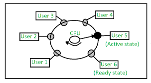(Network Control Program): El NCP era un protocolo utilizado en la ARPANET para la comunicación entre los nodos de la red y los IMPs. Proporcionaba funcionalidades básicas de comunicación, como la transmisión de datos y el control de errores.

(Transmission Control Protocol): El TCP es un protocolo de comunicación utilizado en Internet para la transmisión de datos de manera confiable y ordenada entre dispositivos. Junto con el Protocolo de Internet (IP), forma la base del conjunto de protocolos TCP/IP utilizado en Internet.

ISO (Organización Internacional de Normalización) es una organización que establece estándares internacionales en diversas industrias, incluida la tecnología de la información y las comunicaciones.
La red de ordenadores CYCLADES era una red de investigación francesa creada en los primeros años de los 70s. Fue una de las redes pioneras que experimentó con el concepto de conmutación de paquetes y fue desarrollada para explorar alternativas al diseño ARPANET. Sostenía la red local de investigación general
Una arquitectura de sistemas (también conocido como una arquitectura de la empresa) es un súper conjunto de una arquitectura de red, en la que se describen las relaciones, así como los componentes y funciones importantes del sistema, tales como el almacenamiento
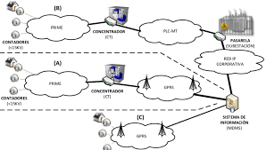(Internet Protocol): El IP es un protocolo de comunicación utilizado para enrutar paquetes de datos a través de redes de computadoras. Proporciona identificación y direccionamiento de dispositivos en una red, permitiendo la entrega de datos a su destino correcto.
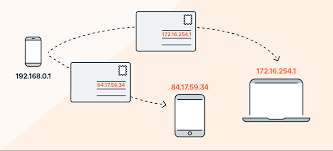FTP es el acrónimo de «Protocolo de Transferencia de Ficheros (en inglés, File Transfer Protocol). FTP es un protocolo que se utiliza para transferir todo tipo de archivos entre equipos conectados a una red, por ejemplo Internet.

SMTP significa protocolo simple de transferencia de correo. Se trata de un protocolo de comunicación que se utiliza para enviar y recibir mensajes de correo electrónico a través de Internet.
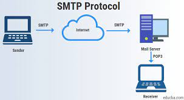Un dominio en Internet es el nombre exclusivo y único que se le da a un sitio web para que cualquier internauta pueda visitarlo e identificarlo.
(Internet Service Provider): Un ISP es una empresa que proporciona acceso a Internet a sus clientes. Los ISP pueden ofrecer servicios de conexión a Internet, alojamiento web, correo electrónico y otros servicios relacionados con Internet.
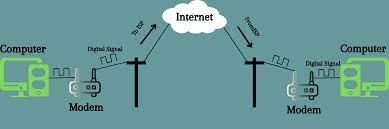(Domain Name System): El DNS es un sistema utilizado en Internet para traducir nombres de dominio legibles por humanos, como "example.com", en direcciones IP numéricas que las computadoras utilizan para identificar los servidores y los recursos en la red.

Un dispositivo analógico que amplifica una señal de entrada, independientemente de su naturaleza (analógica o digital).

es el componente que se encarga de crear una señal o una petición desde el ordenador.

Si nos centramos en lo tecnológico, el receptor es el aparato que posibilita la captación y decodificación de señales.

Este término hace referencia al número de veces que los monitores de PC o pantallas LED se actualizan con nuevas imágenes cada segundo. Por ejemplo, un monitor de PC con una frecuencia de refresco de 60 Hz significa que la pantalla se actualiza 60 veces por segundo.
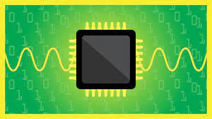Unidad de frecuencia del sistema internacional, que equivale a 1 ciclo por segundo. (Símbolo Hz).

Una LAN inalámbrica (WLAN) es un tipo de red de área local (LAN) que utiliza la comunicación inalámbrica para conectar cualquier tipo de dispositivo o cliente de red.
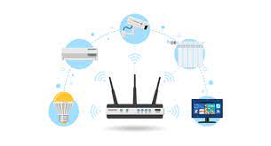redes personales (Personal Area Network): Una PAN es una red de comunicación que conecta dispositivos cercanos, como computadoras personales, teléfonos inteligentes y dispositivos portátiles. Ejemplos comunes de tecnologías de PAN incluyen Bluetooth y USB.
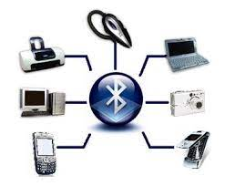red monopolitana (Metropolitan Area Network): Una MAN es una red de comunicación que cubre un área geográfica más grande que una LAN pero más pequeña que una WAN. Por lo general, se utiliza para interconectar varias LAN dentro de una ciudad o área metropolitana, proporcionando servicios de comunicación de alta velocidad y alta capacidad.

La comunicación por radio utiliza ondas electromagnéticas para transmitir datos a través del aire. Estas ondas son generadas por transmisores de radio y recibidas por receptores. La comunicación de radio es utilizada en una amplia variedad de aplicaciones, desde la radiodifusión hasta las comunicaciones móviles.

Las microondas son un tipo de radiación electromagnética con longitudes de onda más cortas que las de las ondas de radio tradicionales. Se utilizan en comunicaciones de larga distancia y en aplicaciones como las redes inalámbricas de área local (WLAN) y las comunicaciones por satélite.
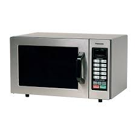El infrarrojo es una forma de radiación electromagnética con longitudes de onda más largas que las de la luz visible pero más cortas que las de las microondas. Se utiliza en dispositivos de comunicación de corto alcance, como los controles remotos de televisión y los enlaces de comunicación punto a punto.
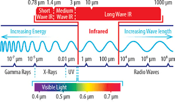Este término se refiere a cualquier tipo de comunicación que se realiza sin el uso de cables físicos. Incluye tecnologías como Wi-Fi, Bluetooth y comunicaciones celulares.
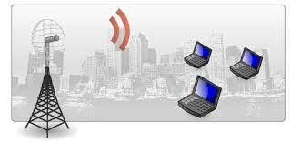Una red celular es un sistema de comunicación inalámbrica que divide una región en celdas geográficas. Cada celda está servida por una estación base que se comunica con dispositivos móviles dentro de su área de cobertura. Las redes celulares son utilizadas para servicios móviles como llamadas telefónicas, mensajes de texto y acceso a Internet.

Se refiere a una red de comunicación que utiliza cables físicos para conectar dispositivos entre sí. Estos cables pueden ser de diferentes tipos, como cable coaxial, par trenzado o fibra óptica.

Este término se refiere a cualquier tipo de conexión de red que utiliza cables físicos para transmitir datos. Se utiliza comúnmente para distinguir las conexiones cableadas de las inalámbricas.

El cable par trenzado es un tipo de cable utilizado en redes de comunicación que consiste en pares de alambres de cobre trenzados entre sí para reducir la interferencia electromagnética.
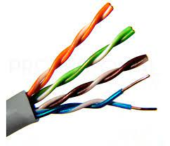cable par trenzado sin blindaje UPT tienes una capa de proteccion menos, es menos seguro para interferencia

cable par trenzado blindado, STP tiene una capa adicional de protección mas que el UTP, para reducir aún más la interferencia.
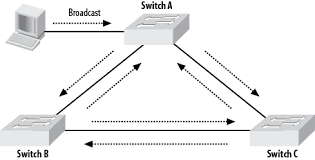El cable coaxial es un tipo de cable que utiliza un conductor central rodeado por un tubo conductor concéntrico. Se utiliza comúnmente en aplicaciones de comunicación de banda ancha, como la televisión por cable e Internet de alta velocidad.
La fibra óptica es un medio de transmisión que utiliza hilos delgados de vidrio o plástico para transmitir datos mediante pulsos de luz. Es conocida por su alta capacidad de transmisión y su inmunidad a la interferencia electromagnética, lo que la hace ideal para redes de alta velocidad y larga distancia.

Las topologías de red se refieren a la estructura física o lógica de una red de comunicación. Algunos ejemplos comunes incluyen la topología de bus, la topología de estrella y la topología de anillo.
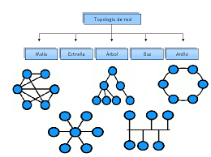-Red de Área Personal Inalámbrica- se refiere a redes de corto alcance, como Bluetooth.

-Red de Área Metropolitana Inalámbrica- se refiere a redes de área metropolitana, como WiMAX.

(Red de Área Amplia Inalámbrica) se refiere a redes de área amplia, como las redes celulares.

Las redes satelitales son sistemas de comunicación que utilizan satélites artificiales en órbita alrededor de la Tierra para transmitir datos entre distintos puntos en la superficie terrestre.

TCP/IP (Protocolo de Control de Transmisión/Protocolo de Internet) es el conjunto de protocolos utilizado para la comunicación en Internet y en muchas otras redes. Se compone de dos protocolos principales: el Protocolo de Control de Transmisión (TCP) y el Protocolo de Internet (IP).

El espectro electromagnético es el rango completo de frecuencias de radiación electromagnética, que incluye desde las ondas de radio hasta los rayos gamma. Las diferentes partes del espectro se utilizan en diversas aplicaciones de comunicación y tecnología.

Los rayos gamma son la forma más energética de radiación electromagnética. Se utilizan en aplicaciones como la radioterapia y la esterilización de alimentos, pero también pueden ser peligrosos para la salud si se exponen en exceso.

La radiación ionizante es cualquier forma de radiación electromagnética que tiene suficiente energía para ionizar átomos y moléculas, lo que puede causar daño celular. Esto incluye rayos X, rayos gamma y ciertas partículas subatómicas.

La radiación no ionizante es cualquier forma de radiación electromagnética que carece de suficiente energía para ionizar átomos y moléculas. Ejemplos incluyen las microondas, las ondas de radio y la luz visible.

(Amplitud Modulada): Un modulador AM es un dispositivo que modula la amplitud de una señal portadora de alta frecuencia de acuerdo con la amplitud de una señal moduladora de baja frecuencia. Se utiliza en la transmisión de radio AM.

En comunicaciones, un carrier (portadora) es una señal de alta frecuencia utilizada para transportar una señal modulada. Por ejemplo, en la modulación de amplit

Un enrutador es un dispositivo de red que dirige el tráfico de datos entre diferentes redes. Actúa como un punto de conexión entre varias redes y toma decisiones sobre la mejor ruta para enviar paquetes de datos. .

Un gateway es un punto de entrada o salida entre dos redes que permite la comunicación entre ellas. Puede ser un dispositivo físico o un software que facilita la transferencia de datos entre redes con diferentes protocolos.

Un firewall es un sistema de seguridad que controla y monitoriza el tráfico de red, permitiendo o bloqueando el acceso a recursos en función de reglas predefinidas. Se utiliza para proteger una red privada de amenazas externas.

Red privada virtual. Una VPN es una red privada que utiliza una red pública, como Internet, para establecer conexiones seguras y cifradas entre dispositivos remotos. Permite a los usuarios acceder a recursos de red de forma segura como si estuvieran conectados localmente.

Una subred es una porción de una red IP que ha sido dividida en redes más pequeñas. Se utiliza para organizar y gestionar direcciones IP dentro de una red más grande, mejorando la eficiencia y la gestión de la red.

La transmisión es el proceso de enviar datos desde un dispositivo emisor a un dispositivo receptor a través de una red de comunicación. Implica la codificación, modulación y envío de los datos a través del medio de transmisión.

La recepción es el proceso de recibir datos en un dispositivo desde otro dispositivo a través de una red de comunicación. Implica la decodificación y procesamiento de los datos recibidos para su uso por parte del dispositivo receptor.

Un switch es un dispositivo de red que conecta varios dispositivos en una red local y dirige el tráfico de datos hacia su destino. Permite la comunicación eficiente entre dispositivos al enviar datos solo a los dispositivos específicos que los solicitan.

Un proxy es un servidor intermediario que actúa como un punto de acceso entre los usuarios y los servidores de destino. Puede mejorar la seguridad y el rendimiento al cachear contenido, filtrar solicitudes o enmascarar direcciones IP.

DHCP es un protocolo de red que asigna direcciones IP automáticamente a dispositivos en una red. Permite a los dispositivos obtener una dirección IP, configuración de red y otros parámetros de manera dinámica sin intervención manual.

Visual Studio Code es un editor de código fuente desarrollado por Microsoft. Es multiplataforma, compatible con Windows, macOS y Linux, y es ampliamente utilizado por desarrolladores de software para escribir, editar y depurar código en diversos lenguajes de programación. Ofrece características como resaltado de sintaxis, completado de código, depuración integrada, control de versiones y soporte para extensiones que amplían su funcionalidad. Es conocido por su interfaz de usuario personalizable, rendimiento rápido y amplia comunidad de usuarios y desarrolladores que contribuyen con extensiones y mejoras.